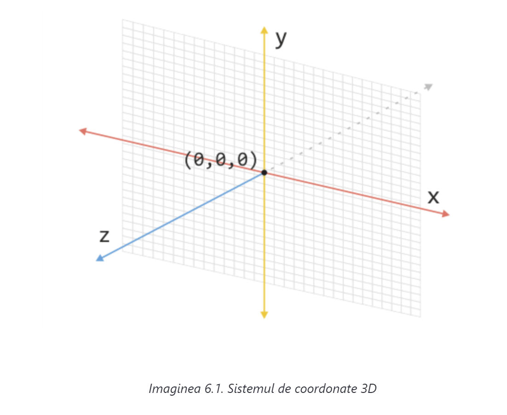

Înainte de a prezenta în practică transformarea elementelor în spaţiul 3D, este bine să ne familiarizăm cu toate caracteristicile sistemului de coordonate cu trei axe, în cadrul căruia se efectuează transformările menţionate. Toate caracteristicile sistemului de coordonate bidimensional, care au fost prezentate în lecţia anterioară, se aplică şi la sistemul tridimensional. Singura diferenţă este existenţa unei axe în plus (imaginea 6.1.).
Ca şi la sistemul de coordonate bidimensional, axa orizontală este, de fapt, axa x, în timp ce axa verticală este axa y. A treia axă, (axa z), este perpendiculară pe planul construit pe axele x şi y.
Existenţa unei singure axe necesită mai multe reprezentări ale punctelor folosind cele trei valori, adică câte una pentru fiecare axă (x, y, z). Astfel, în imaginea 6.1., punctul de referinţă al sistemului de coordonate 3D este reprezentat prin coordonate (0,0,0).